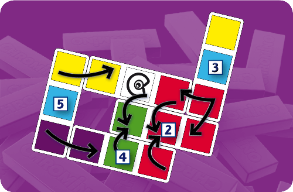

Chromino
Board Game Arena 官方规则文档
Game Components
- 75 Chromino tiles, all unique, using combinations of 5 colours;
- 🟥 🟨 🟩 🟦 🟪
- 5 Chameleon Chromino tiles, combining 2 different colours and a central square with a symbol;
- 1 bag containing all the Chromino tiles and used to draw from;
Principle and aim of the game
The principle of the game is to play your Chromino tiles next to each other with at least two contacts between identically coloured squares.
Note if there are additional contacts made, those extra contacts *cannot* be of different colours. That is, each contact must be a pairing of colours.
As well as the 75 basic tiles, there are also 5 Chromino tiles. Their central square with symbol is surrounded by 2 normal coloured squares. The central square of a Chameleon Chromino can be placed in contact with any other colour. This means it can therefore be in contact with one colour on one side and a different colour on the other!
Each player attempts to be the first to play all the Chromino tiles dealt at the beginning or drawn during the game.
The winner is the first player to play all their Chromino tiles.
Setting up the game
- Before the game begins, the players should look for a Chameleon Chromino tile. This first tile should be placed colour-side-up in the center of the table. This Chromino tile will be the base around which the game will be built.
- All the remaining Chromino tiles are placed in the bag.
- Next, each player in turn draws eight tiles from the bag at random and places them on the table in front of themselves without showing the tiles to the other players.
Playing the game
The first player is randomly picked and the game is then played in sequence, one player after the other.
When it is a player’s turn to play, two situations can occur:
- The player has a Chromino tile they can place on the table according to the minimum two contacts rule. They play their Chromino, and the turn passes to the next player.
- The player cannot place any of their Chromino tiles: they must draw another Chromino randomly from the bag (if there are any left).
- If they can, the player may place the drawn Chromino tile. The turn passes on to the next player.
- If they can’t place the Chromino tile, the player must keep it and pass their turn. The turn passes on to the next player.
It should be mentioned that the more the game spreads, the more possibilities you will have for fulfilling the two contact rule. It is, in fact, often possible to be able to make 3, 4, 5 or even 6 contacts when placing a single Chromino tile.

Ending the game
As soon as a player is left with only one remaining Chromino, they should place it colour side up in front of them, so it is visible to all.
A player cannot play a Chameleon Chromino as their last tile. If the last tile they have left is a Chameleon Chromino they will have to draw a new tile.
The first player to place their last Chromino tile wins the game. However, the other players should continue to play until the end of the current turn, and if any other players managed to place their last Chromino during this last turn, they will be declared joint winners.
Game Options
Player Assistance
Different levels of player assistance are available to help you play Chromino with the least friction.
Beginner
- Playable tiles are highlighted
- Where they can be placed is highlighted
- You will be unable to draw a new tile if the player assistance can see that you have a valid move available
- In Expert Play, you can see how many points you will earn for each tile BEFORE you make the move.
Intermediate
In this mode all the Player Assistance from the Beginner level is present, minus the restriction on Tile Drawing. You are able to draw a tile, even if there is a valid move available. Use this to your advantage buy building a good hand for quick finishes or high-scoring combos.
None
No assistance is given. Only for master players 😎
Alternative Rulesets
Junior Play
If you are playing Chromino with young children, you can teach them to play by playing the game like regular Dominoes, by only making a single contact of identical colour between the ends of the tiles.
By placing the Chameleon Chromino tiles perpendicularly (like doubles in the gameof Dominoes), the game will be able to spread in several directions, as this is one of the specificities of Chromino.
Expert Play
It is possible, and even recommended for regular players, to play Chromino by giving a score to each tile placement, depending on the complexity of the tile itself and the position it is finally placed in.
- Each Chromino is given a value equal to the number of different colours it is made up of (1, 2 or 3 points - Chameleon Chromino tiles being worth 3 points).
- As each Chromino tile is placed, add the value of the Chromino being placed to the value of all the tiles it is placed in contact with.
Solo
A no stress mode, to see how quickly you can clear your hand. A great way to both practice recognising patterns and training for your finishing plays.
Player Preferences
You can access a list of player preferences by clicking the purple cogs in the player board area. You are welcome to change these settings as much as you'd like to make the game as comfortable as possible.
Colour Palette
Different palettes are available for players to choose from. A few palettes were designed with those with colour-blindness in mind. You can switch colour palettes freely, and can even combine it with symbols the tiles.
Display tile symbols
If preferred, symbols can be added to tiles to help differentiate between the different colours. This can be enabled or disabled at any time, and can work with any colour palette.
Reverse scroll arrow direction
The arrow buttons on the game board can be clicked to shift the board to get a better view of the tiles. If the arrows move the board in the opposite way you'd expect, you can toggle this preference to see if it helps make things feel better. Remember: On desktop you can also move the board by clicking and dragging.